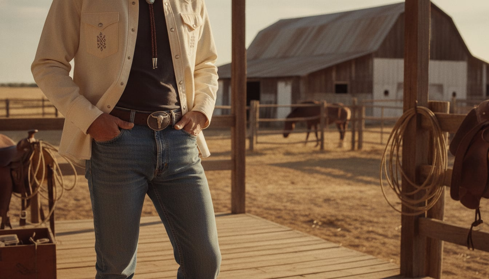
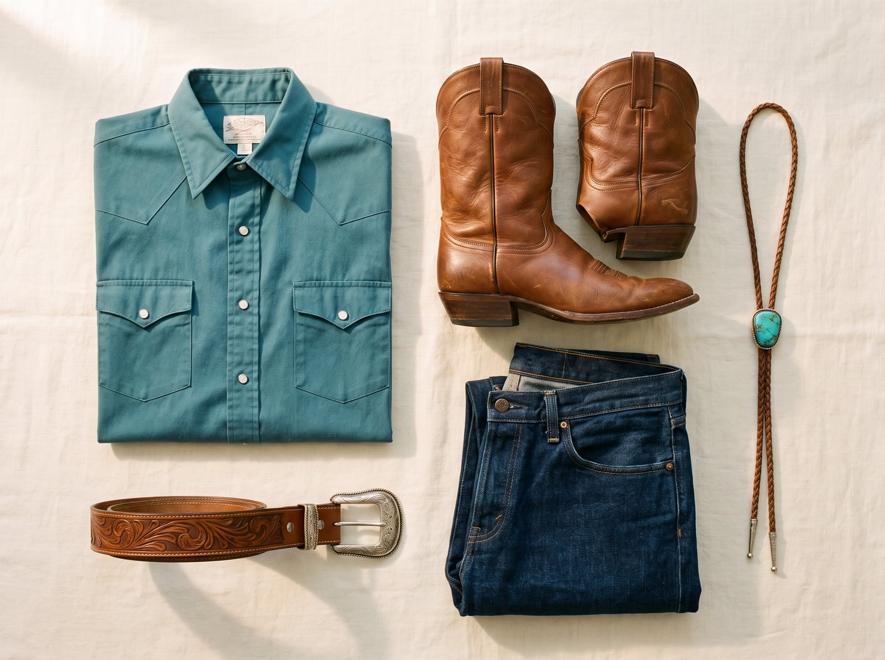
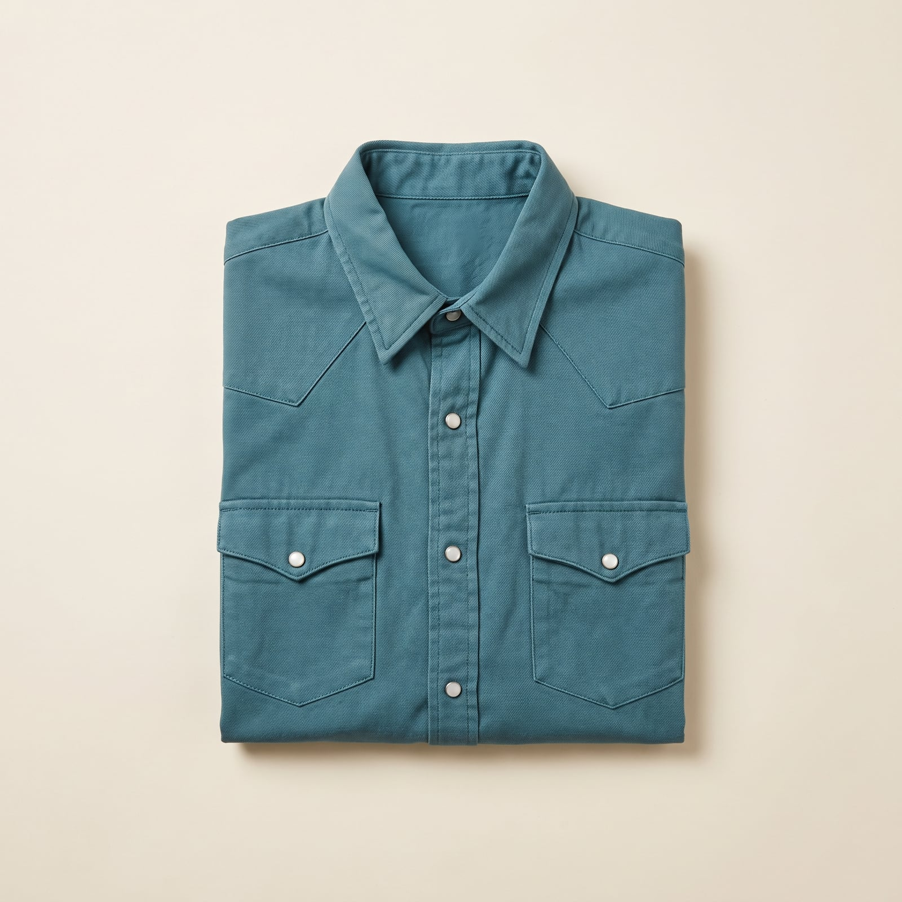
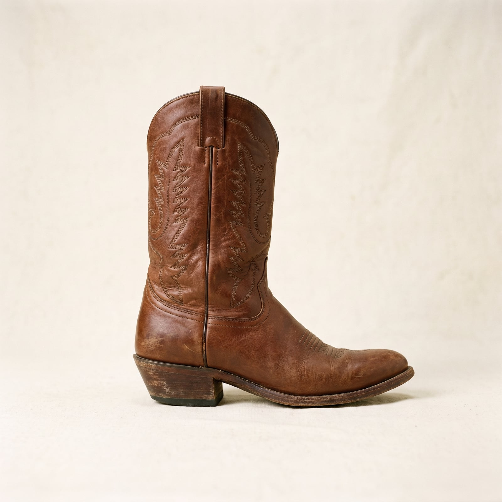
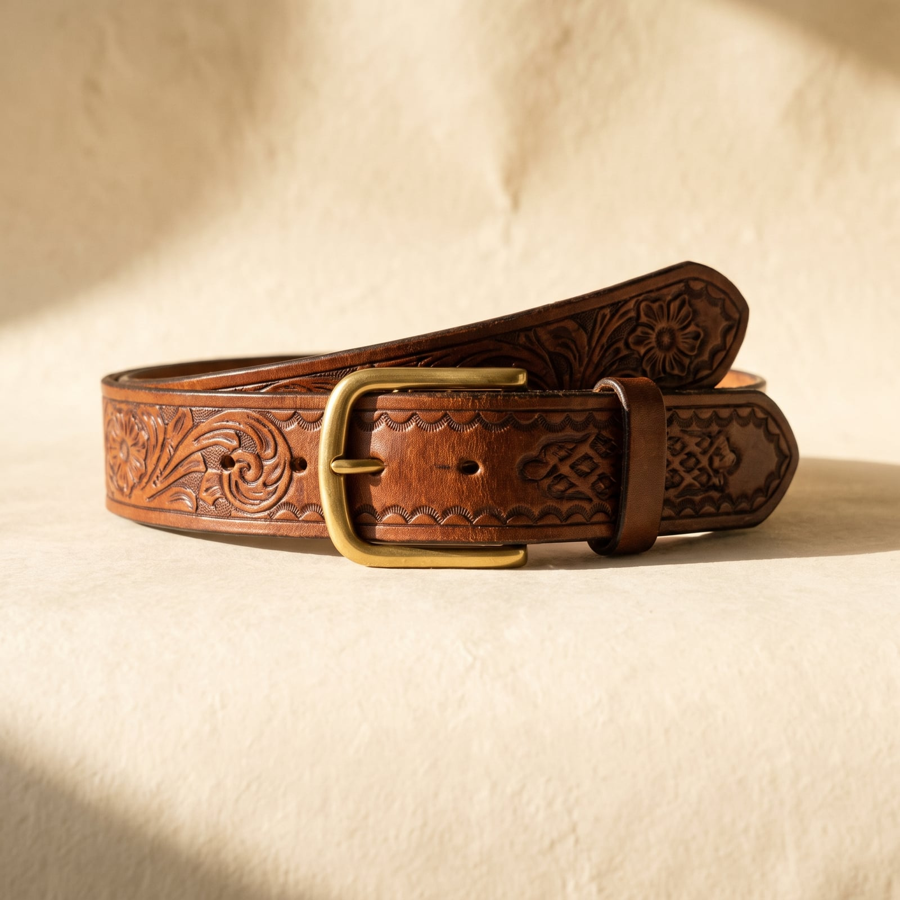
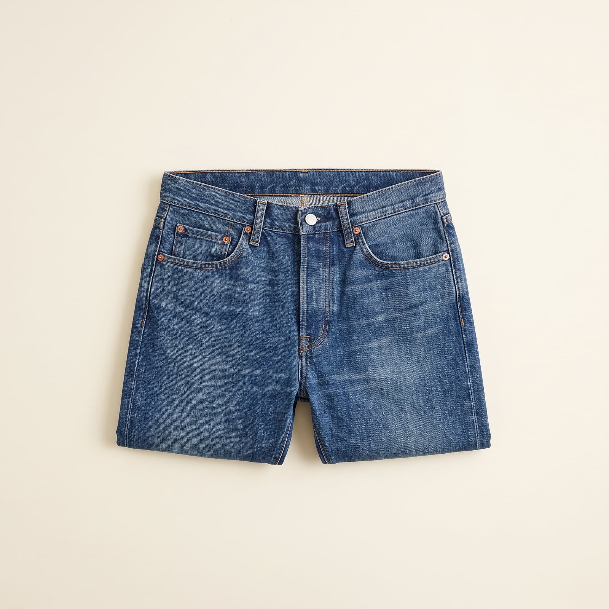
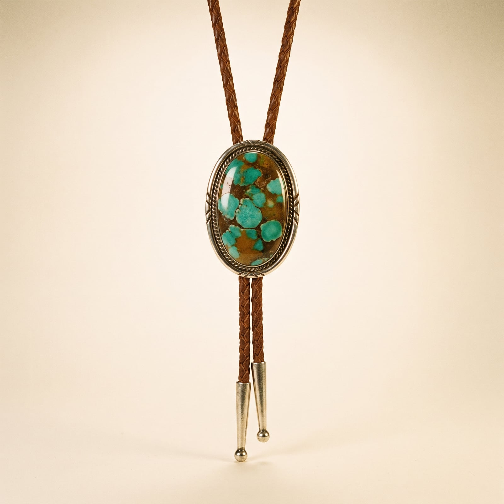

The Rancher
Western wear didn't start as fashion; it started as equipment. The cowboy boot's angled heel was built to catch a stirrup, not a compliment; the pearl-snap shirt, popularized in the 1940s by rodeo-circuit tailors like Rockmount Ranch Wear, was designed to pop open rather than tear when a sleeve caught on a fence or a bull's horn. Levi's riveted jeans found their first real customers among ranch hands decades before anyone in a city wore them on purpose. Hollywood got there later, casting the look in a hundred Westerns until the line between what a rancher actually wears and what a rancher is supposed to look like blurred for good.
What survived the blurring is a wardrobe that still reads as sincere even at its most decorative — a turquoise bolo, hand-tooled leather, a yoke embroidered across the shoulders. None of it is subtle, exactly, but none of it is costume either; the flash has a working pedigree, the same way a good saddle is ornamented without being fragile.
It suits people who take pride in a plainspoken competence — who'd rather be underestimated by a stranger and then prove them wrong than spend the first five minutes explaining themselves. There's real romance in it, but a load-bearing kind: the boots still need to survive a corral, whatever else they're doing at the bar afterward.
- Pearl-snap western shirts with a yoke across the shoulders
- Cowboy boots with an angled heel, built for a stirrup first
- Hand-tooled leather belts and a buckle sized to be seen
- Denim worn hard and often, indigo fading into a life story
- Bolo ties and turquoise, decorative but never fragile

The Pearl-Snap Western Shirt
Rockmount Ranch Wear began fitting rodeo cowboys with snap closures in the 1940s so a shirt would pop open rather than tear when a sleeve caught on a fence or a bull's horn — the yoke and snaps have stayed functional ever since, not just decorative.
Genuine snap closures and yoke construction at a real discount.
Shop this →The house that invented the modern snap shirt, still made the same way.
Shop this →Heritage-grade cotton and vintage-inspired detailing at a luxury finish.
Shop this →
The Cowboy Boot
The angled heel exists to catch and hold a stirrup, not to add height — everything else about the boot's shape, from the pointed toe to the pull straps, follows from that one working requirement.
Hand-lasted, often made to the customer's own foot measurements.
Shop this →
The Leather Belt & Buckle
A wide, hand-tooled belt with an oversized buckle started as functional gear — something substantial enough to hold a working rig — before becoming the wardrobe's most legible piece of personal decoration.
Hand-tooled leather from houses with real rodeo-circuit history.
Shop this →Hand-engraved sterling silver buckles, often personalized.
Shop this →
The Western-Fit Denim
Ranch denim differs from city denim mainly in the rise and boot-cut leg — cut generously enough to move in the saddle and to break cleanly over a boot shaft rather than a sneaker.
The actual denim rodeo competitors wear, at its original working price.
Shop this →A more considered cut with the same working-denim durability.
Shop this →American-woven denim cut to a specific rise and boot-break.
Shop this →
The Bolo Tie
The bolo — a cord and clasp worn in place of a necktie — became the unofficial neckwear of the American Southwest by the mid-20th century, formal enough for a dinner but entirely unwilling to actually be a tie.
A real clasp and leather cord at an accessible price.
Shop this →Genuine Native American silverwork, often signed by the maker.
Shop this →Collectible pieces from named silversmiths, bought through reputable galleries.
Shop this →Buy boots with a real angled heel built for a stirrup, even if you've never been near a horse — the silhouette depends on it, and a flat-heeled 'western-style' boot from a fashion label reads as costume next to the real thing. Let the belt buckle be genuinely sized to be seen; a small, modest buckle undersells the whole point of wearing one.
Let the denim actually fade and wear from real use — this wardrobe was built for work, and jeans that still look retail-fresh contradict everything else in the outfit. Buy the pearl-snap shirt in a print or color you're not afraid to sweat through.
Don't confuse this with rodeo-costume western wear — fringe, oversized silver, and anything clearly built for a stage rather than a saddle reads as performance rather than the working wardrobe this actually is. The real version is plainer and tougher than the version sold at a costume shop, and the difference is obvious to anyone who's spent real time on a ranch.
This wardrobe is calibrated to actual outdoor, physical work, and it reads oddly out of that context — a full western outfit worn to an urban office says something very different than intended, the same mismatch as wearing a construction uniform to a dinner party. Save the boldest pieces, the bolo tie especially, for settings that can actually place them.
A lighter western shirt, sleeves rolled, straw cowboy hat instead of felt, and the same boots regardless -- ranch work doesn't pause for weather.
A shearling or wool-lined denim jacket over the western shirt, a heavier felt hat, and gloves built for actually handling rope and rail.
A long waxed or oilskin duster coat -- genuinely functional, genuinely part of the tradition, not a fashion afterthought -- over everything else.
The duster gets heavier insulation underneath, the boots get a shearling-lined winter version, and a wool-lined hat replaces the usual felt one entirely.
For a wedding or a big rodeo dance: a pressed western shirt with pearl snaps, the good hat, and boots polished rather than dusty -- the bolo tie comes out of the drawer.

Wyoming, Montana, and the actual working ranches of West Texas rather than the dude-ranch version marketed to tourists. A rodeo circuit gets followed the way other people follow a sports league, with strong opinions about specific riders.
A trip is judged successful mostly by how far it was from anywhere else — the appeal is space, not scenery for its own sake.
Louis L'Amour and Larry McMurtry's Lonesome Dove, read and reread the way other people rewatch a favorite film. A well-worn almanac gets consulted more than any app ever could replace it.
Reads outside, when there's time, which isn't often — a book gets picked up in short bursts across a season rather than finished in a sitting.
Find it on Amazon →George Strait and Merle Haggard, plus western swing — Bob Wills specifically — played loud enough to hear over a truck engine.
A genuine, lifelong loyalty to country radio that predates the genre's more recent crossover moment, and a mild suspicion of anything too polished.
Listen on YouTube →A big front porch built for sitting, used daily regardless of season, and mounted antlers with an actual story behind them rather than a decorator's approximation of one.
Furniture sturdy enough to survive boots and dogs both, chosen for durability first and appearance a distant second.
See more on Pinterest →Actual ranch work treated as recreation as much as labor — mending fence or moving cattle counts as a good weekend, not a chore to escape from.
Team roping and a standing bet at the county fair that's been running long enough nobody remembers the original terms.
Learn more →